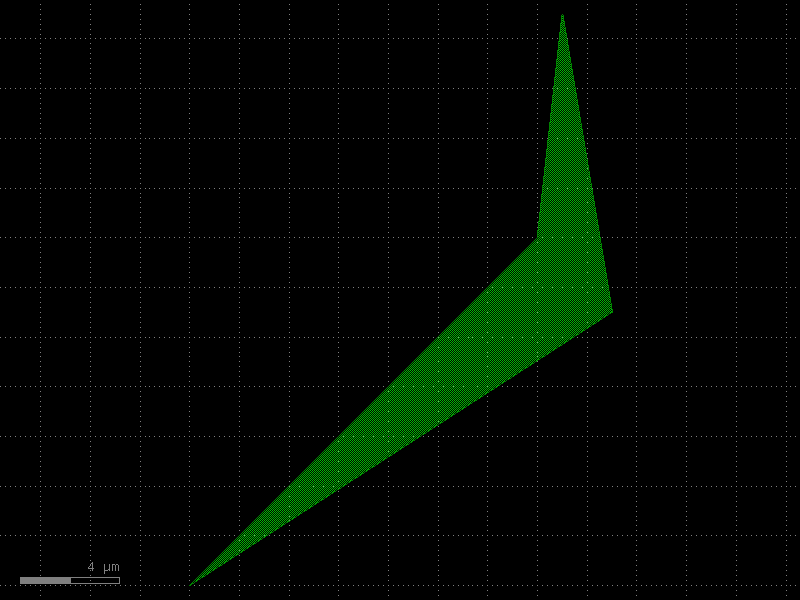
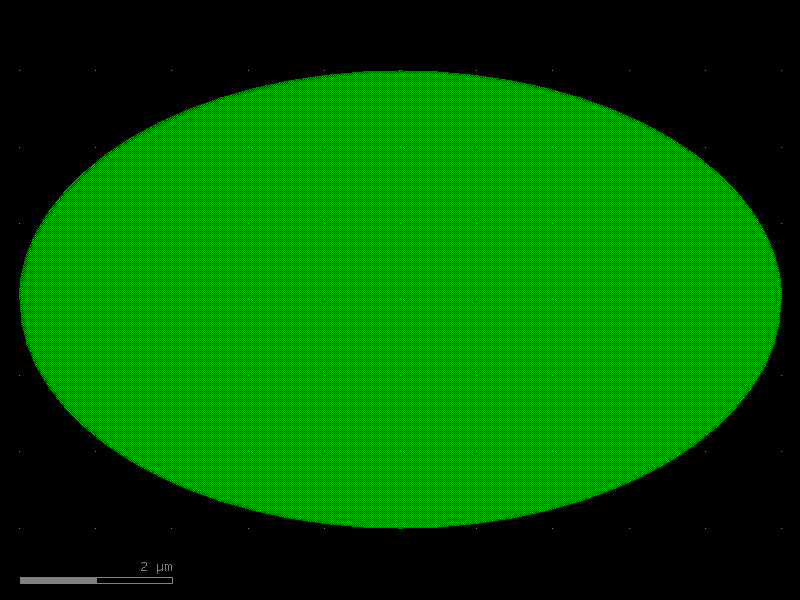
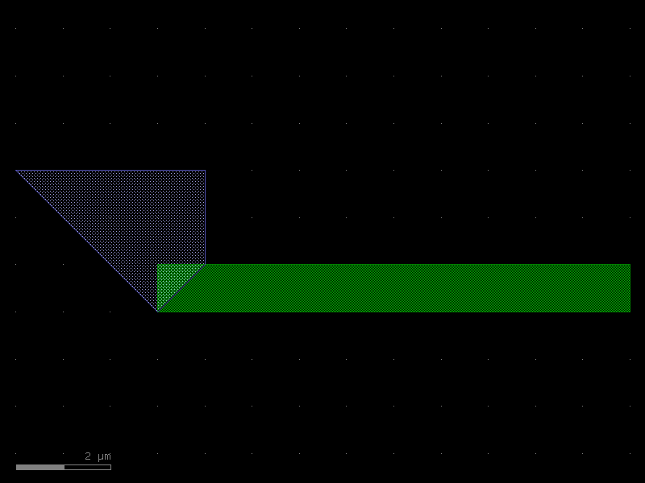
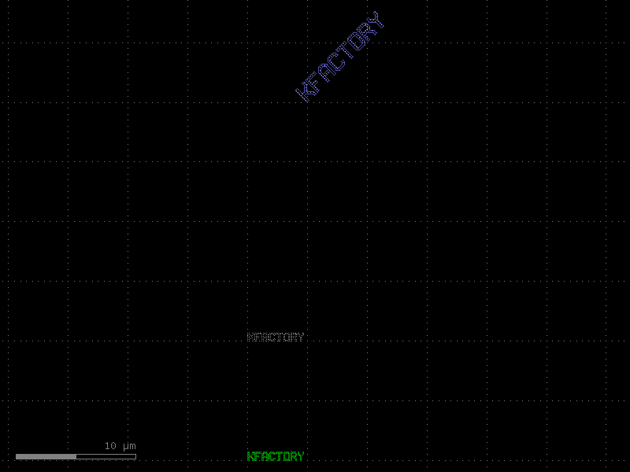
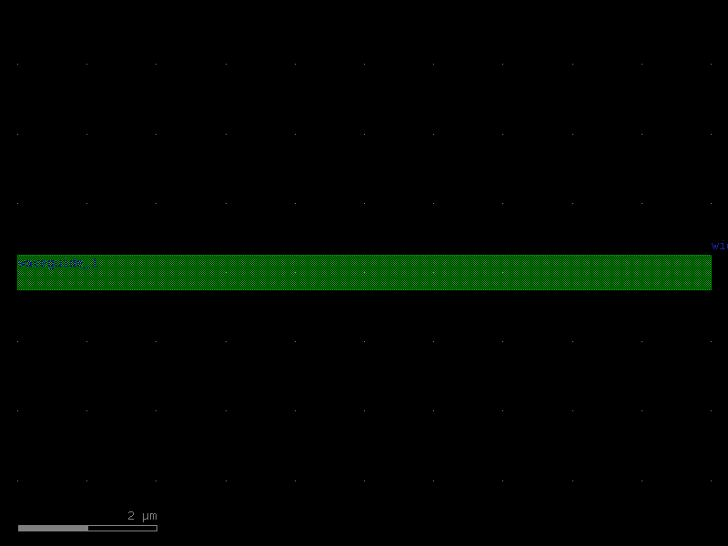
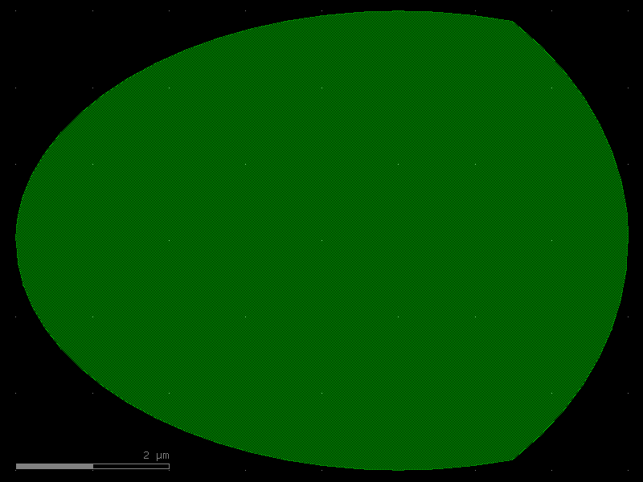
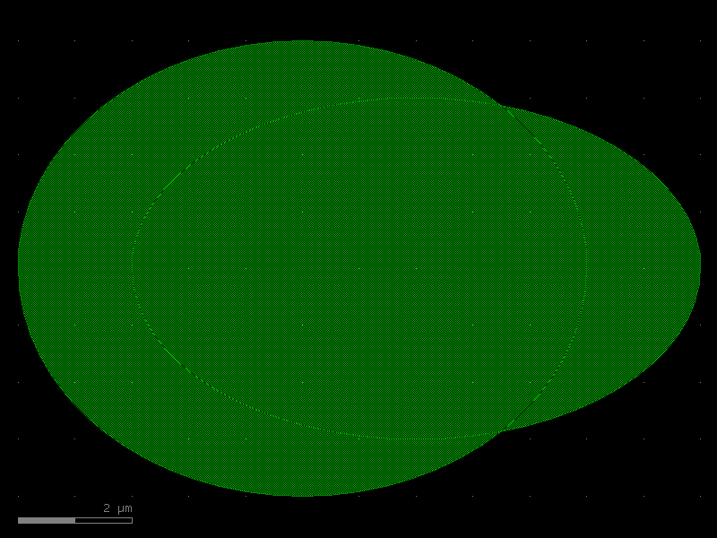
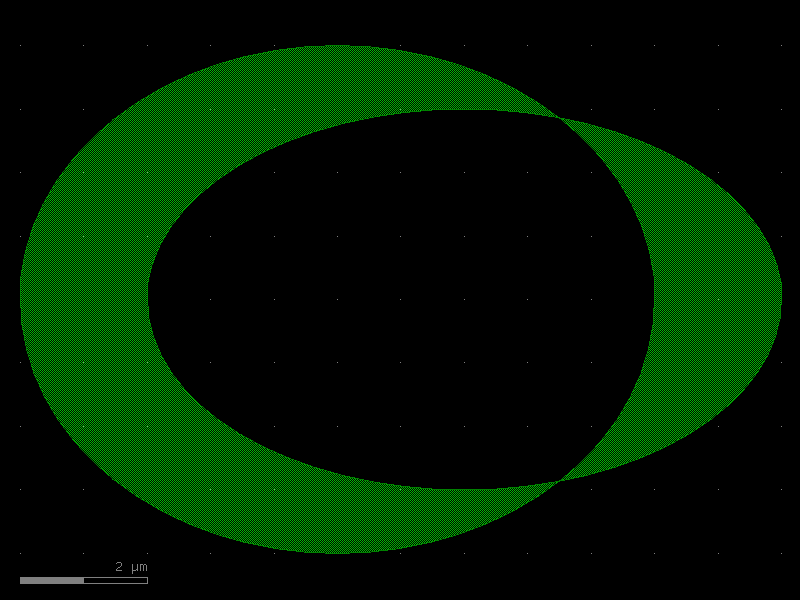

Geometry
kfactory uses KLayout's geometry primitives directly. Every shape lives on an integer grid called the database unit (DBU) grid. The default grid is 1 nm (1 DBU = 0.001 µm).
Two parallel APIs exist for every shape type:
| DBU (integer) | Microns (float) | Conversion |
|---|---|---|
Point |
DPoint |
kcl.to_dbu(dp) / kcl.to_um(p) |
Box |
DBox |
same |
Polygon |
DPolygon |
same |
Edge |
DEdge |
same |
Region |
— | DBU only |
Use the D-variants (microns) when writing component code; use the integer
variants only when you need to interact with Region or read back raw DBU
coordinates.
import numpy as np
import kfactory as kf
class LAYER(kf.LayerInfos):
WG: kf.kdb.LayerInfo = kf.kdb.LayerInfo(1, 0)
WGEX: kf.kdb.LayerInfo = kf.kdb.LayerInfo(2, 0)
CLAD: kf.kdb.LayerInfo = kf.kdb.LayerInfo(4, 0)
FLOORPLAN: kf.kdb.LayerInfo = kf.kdb.LayerInfo(10, 0)
L = LAYER()
kf.kcl.infos = L
Basic shape primitives
DBox — axis-aligned rectangle
DBox(left, bottom, right, top) or DBox(width, height) (centred at origin).
box_um = kf.kdb.DBox(-2.5, -5, 2.5, 5) # 5 µm wide, 10 µm tall, centred
box_um
(-2.5,-5;2.5,5)
# Convert to DBU integers for low-level operations
box_dbu = kf.kcl.to_dbu(box_um)
print(f"DBU: {box_dbu}")
print(f"DBU width : {box_dbu.width()} nm")
print(f"µm width : {box_um.width()} µm")
DBU: (-2500,-5000;2500,5000)
DBU width : 5000 nm
µm width : 5.0 µm
DPolygon — arbitrary polygon in microns
# From a list of DPoint objects
poly_a = kf.kdb.DPolygon(
[
kf.kdb.DPoint(-8, -6),
kf.kdb.DPoint(6, 8),
kf.kdb.DPoint(7, 17),
kf.kdb.DPoint(9, 5),
]
)
# Convenience wrapper: pass a NumPy array of (x, y) pairs
points = np.array([(-8, -6), (6, 8), (7, 17), (9, 5)])
poly_b = kf.polygon_from_array(points)
# Both produce equivalent polygons
c = kf.KCell(name="polygon_demo")
c.shapes(kf.kcl.find_layer(L.WG)).insert(poly_a)
c.shapes(kf.kcl.find_layer(L.WGEX)).insert(poly_b)
c.plot()

DPolygon — ellipse helper
DPolygon.ellipse(bbox, n_points) inscribes an ellipse inside bbox.
ellipse = kf.kdb.DPolygon.ellipse(kf.kdb.DBox(10, 6), 64)
e_cell = kf.KCell(name="ellipse_demo")
e_cell.shapes(kf.kcl.find_layer(L.WG)).insert(ellipse)
e_cell.plot()

Inserting shapes into a cell
All shapes live inside a cell on a specific layer.
cell.shapes(layer_index).insert(shape) adds the shape to that layer.
c = kf.KCell(name="shapes_on_layers")
# Box on WG layer
c.shapes(kf.kcl.find_layer(L.WG)).insert(kf.kdb.DBox(0, 0, 10, 1))
# Polygon on CLAD layer (list-of-points style)
c.shapes(kf.kcl.find_layer(L.CLAD)).insert(
kf.kdb.DPolygon([kf.kdb.DPoint(x, y) for x, y in ((0, 0), (1, 1), (1, 3), (-3, 3))])
)
c.plot()

Transformations
Shapes can be transformed with shape.transformed(trans).
| Class | Description |
|---|---|
DTrans(x, y) |
Translate by (x, y) µm (and optionally rotate 0/90/180/270 °) |
DCplxTrans(mag, angle_deg, mirror, x, y) |
Arbitrary rotation + magnification |
Note:
DCplxTransmagnification is only safe on plain shapes; foundries typically disallow it on cell instances.
textgen = kf.kdb.TextGenerator.default_generator()
text_region = textgen.text("kfactory", kf.kcl.dbu)
c = kf.KCell(name="text_transforms")
# Place text at origin
c.shapes(kf.kcl.find_layer(L.WG)).insert(text_region)
# Translate +10 µm in y
c.shapes(kf.kcl.find_layer(L.WGEX)).insert(
text_region.transformed(kf.kdb.DTrans(0, 10.0).to_itype(kf.kcl.dbu))
)
# Rotate 45° and scale ×2
c.shapes(kf.kcl.find_layer(L.CLAD)).insert(
text_region.transformed(
kf.kdb.DCplxTrans(2.0, 45.0, False, 5.0, 30.0).to_itrans(kf.kcl.dbu)
)
)
c.plot()

Labels (GDS text annotations)
Labels record metadata directly in the GDS file (e.g. port names, cell IDs).
They are not fabricated — use kf.kdb.Text for labels and polygon-based text
(via TextGenerator) for visible text shapes.
anno = kf.KCell(name="label_demo")
s = kf.cells.straight.straight(length=10, width=0.5, layer=L.WG)
inst = anno << s
# Attach a label at the instance origin
anno.shapes(kf.kcl.find_layer(L.FLOORPLAN)).insert(
kf.kdb.Text("waveguide_1", inst.trans)
)
# Dynamic label: embed a measurement
anno.shapes(kf.kcl.find_layer(L.FLOORPLAN)).insert(
kf.kdb.Text(
f"width={anno.dbbox().width():.1f}um",
kf.kdb.Trans(anno.bbox().right, anno.bbox().top),
)
)
anno.plot()

Boolean Region operations
kf.kdb.Region is a set of DBU polygons that supports boolean algebra.
Convert a DPolygon to a Region with kcl.to_dbu(poly) first.
| Operator | Meaning |
|---|---|
A - B |
A NOT B (subtract) |
A & B |
A AND B (intersection) |
A + B |
A OR B (union, may overlap) |
(A + B).merge() |
union, merged into minimal polygon set |
A ^ B |
A XOR B (symmetric difference) |
# Two overlapping ellipses
e1 = kf.kdb.DPolygon.ellipse(kf.kdb.DBox(10, 8), 64)
e2 = kf.kdb.DPolygon.ellipse(kf.kdb.DBox(10, 6), 64).transformed(
kf.kdb.DTrans(2.0, 0.0)
)
# Helper: make a demo cell with the result of a Region operation
def _show(name: str, region: kf.kdb.Region) -> kf.KCell:
c = kf.KCell(name=name)
c.shapes(kf.kcl.find_layer(L.WG)).insert(region)
return c
r1 = kf.kdb.Region(kf.kcl.to_dbu(e1))
r2 = kf.kdb.Region(kf.kcl.to_dbu(e2))
NOT (A − B)
_show("not_demo", r1 - r2).plot()
AND (A ∩ B)
_show("and_demo", r1 & r2).plot()

OR / union (A + B)
_show("or_demo", r1 + r2).plot()

OR merged — single-polygon result after .merge()
_show("or_merged_demo", (r1 + r2).merge()).plot()
XOR (A ⊕ B)
_show("xor_demo", r1 ^ r2).plot()

Writing a GDS file
Call cell.write("output.gds") to export to GDSII format.
import tempfile
from pathlib import Path
with tempfile.TemporaryDirectory() as tmp:
out = Path(tmp) / "demo_geometry.gds"
anno.write(str(out))
print(f"Wrote {out.name} ({out.stat().st_size} bytes)")
Wrote demo_geometry.gds (1012 bytes)
Summary
| Task | API |
|---|---|
| Rectangle in µm | kf.kdb.DBox(left, bottom, right, top) |
| Polygon in µm | kf.kdb.DPolygon([DPoint(...), ...]) |
| Polygon from array | kf.polygon_from_array(np_array) |
| Ellipse | kf.kdb.DPolygon.ellipse(bbox, n_pts) |
| Convert µm → DBU | kf.kcl.to_dbu(shape) |
| Convert DBU → µm | kf.kcl.to_um(shape) |
| Add shape to cell | cell.shapes(layer_idx).insert(shape) |
| Boolean subtract | Region(a) - Region(b) |
| Boolean intersect | Region(a) & Region(b) |
| Boolean union | (Region(a) + Region(b)).merge() |
| Boolean XOR | Region(a) ^ Region(b) |
| GDS text label | kf.kdb.Text("label", trans) |
| Export GDS | cell.write("file.gds") |
See Also
| Topic | Where |
|---|---|
| DRC spacing fixes (Region-based) | Utilities: DRC Fixing |
| Auto-cladding via Minkowski sum | Enclosures: Layer Enclosure |
| Fill tiling with Region exclusions | Utilities: Fill |